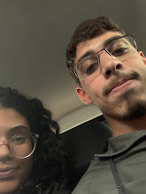
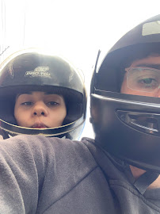

começando com nossa primeira foto, o dia que eu conheci essa garota linda que eu amo ate hoje e sou apaixonado, o que falar desse dia ne, foi tão bom "dormir" com voce aquela noite, ficamos so bestando a noite toda kkk
E não podemos esquecer do dia em que tudo aconteceu, eu te pedi em namoro, eu conheci seu pai morri de medo, mas foi um dia maravilhoso, voce estava linda e com um cheiro tão bom
Aaaaa esse dia, não podemos esquecer desse dia, o dia em que voce conheceu minha familia, foi tão lindo te ver toda nervosa kkkk
.jpg)
.jpg)
Umas das fotos que mais gostei, tão simples elas mas gostava muito
E como poderia esquecer o dia do Taguacenter ne, o dia que comemos uma marmita na praça molhada
O halloween preciso nem falar ne, um dia de conquista de cada vez
!!!!!!!!!!!!!Sabe, esse foi o dia que voce perdeu sua prova do dentran, não temos nenhuma foto no celular, percebi isso.
Alem da foto na cabine, essa foi a unica que tivemos aquele dia, mas nos dois sabemos que esse sim...
Esse sim foi o dia em que percebi que te amava de verdade!!!!!!!!!!!
O dia do primeiro jogo da copa kkk, desse dia so pensei no quanto nos dois emocionado nos primeiros encontro falava sobre ver a copa junto ja, e realmente vimos e conseguimos
Eu sei que voce gosta dessas foto por isso vou colocar, so por que eu sorrir nelas


Nicolandia, nossa primeira briga por besteira, mas eu amei
Nosso ano novo lindo junto, que ficamos apaixonadinhos ouvindo e dançando raquel dos teclado


Bom temos varias e varias fotos juntos para relembrar tudo que passamos ate aqui, mas infelizmente o site fica pesado meu amor mas aqui estão alguma das fotos que gosto muito
clica na ultima imagem